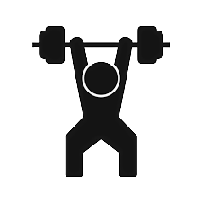

Physical
Physical health is the body's condition with or without the benefits of being active. It affects your lifestyle, diet, and wellness.
Being physically active reduces the risk of medical conditions and disease, strengthens bones and muscles, and your ability to do everyday tasks.

Yoga / Pilates:
| Pilates and yoga uses aspects of physical health combined with mediation and calming breathing techniques. Through these skills, you are able
to improve muscle strength, balance, and flexibility skills. Yoga is a matter of doing a flow into a position, while pilates challenges your
core and muscle strength.
|
| 15 min |
Full Body Pilates |
| 25 min |
Full Body Pilates |
| 45 min |
Full Body Pilates |
Cardio
| An important aspect of cardio exercise is that it reduces the risk for many illnesses and conditions. It also creates a strong
supply of oxygen for the body. Most importantly, cardio exercise improves your overall health and quality of life.
|
| 15 min |
Beginner Cardio |
| 25 min |
Full Body Cardio |
| 45 min |
Full Body Cardio |
Weightlifting
| Weightlifting helps to build muscles and enhances maintenance of a healthy body condition. Strength training lowers the risk of
health conditions, and protects joints from injury. Lastly, strength training enhances your quality of life and ability to enjoy everyday
activities.
|
| 15 min |
Beginner arms |
| 20 min |
Leg workout with dumbells |
| 30 min |
Full body weighted workout |